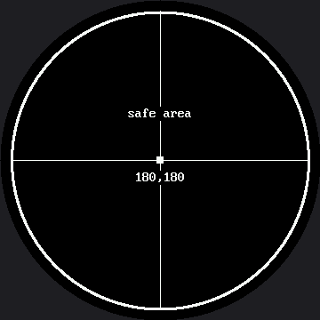

Screen Coordinates¶
The coordinate system on this display works exactly the way it did on the OLED. The origin (0,0)
is the upper-left corner, x grows to the right, and y grows downward — the opposite of the
graphs you draw in math class.
What is new is much stranger: the upper-left corner is not there.
A Square of Pixels Behind a Circle of Glass¶
The GC9B72 controller addresses a 360 by 360 square of pixels. The glass in front of it is the
circle inscribed in that square. Pixel (0,0) is a real, addressable, paid-for pixel — and you
will never see it. Nothing warns you.
x and y Are No Longer Independent
 On a rectangle, any x from 0 to 127 worked with any y from 0 to 63. Here, whether an x is usable depends entirely on the y you pair it with. That one sentence explains most of the surprises in this kit.
On a rectangle, any x from 0 to 127 worked with any y from 0 to 63. Here, whether an x is usable depends entirely on the y you pair it with. That one sentence explains most of the surprises in this kit.
These are the landmarks worth memorizing before you place anything:
| Landmark | Value |
|---|---|
| Center of the screen and of the circle | (180, 180) |
| Physical edge of the glass | radius 180 |
config.SAFE_RADIUS — comfortably inside the bezel |
168 (an estimate, not yet measured on this panel) |
| Corner of the addressable square | radius ≈ 254 — never visible |
That last row is the whole lesson. A corner of the square sits 180 × 1.414 ≈ 254 pixels from the center, and the glass stops at 180. Seventy-four pixels of your drawing surface simply do not exist beyond the rim — more overhang, in absolute pixels, than the 1.2" kit's panel has, where the corner sat 170 out and the glass stopped at 120 pixels, a 50-pixel overhang. Both panels lose the same fraction of their square to the bezel; this one just has more pixels to lose.
When you are placing something near the rim and are not sure whether it will survive,
config.inside_circle(x, y) does the arithmetic for you:
Sample Program Code¶
This program draws proof. The four corner dots and their labels sit at the same landmark positions the 1.2" kit uses, scaled up to this panel's size, and then a thicker ring shows you which of them survive.
import config
import shapes
display = config.init_display()
WHITE = config.WHITE
BLACK = config.BLACK
WIDTH = config.WIDTH
HEIGHT = config.HEIGHT
FONT = config.SMALL_FONT
display.fill(BLACK)
# axis lines through the CENTER, not along the edges -- on a round screen
# the edges of the square are the part you cannot see
display.hline(12, HEIGHT // 2, WIDTH - 24, WHITE)
display.vline(WIDTH // 2, 12, HEIGHT - 24, WHITE)
# The four corners of the addressable square. Watch how many appear.
#
# The dots scale with the screen (6 px became 9), but the LABELS do not:
# the font is a fixed 8x16 bitmap on every panel this kit will ever meet.
# So each label's x is computed from its real width -- len * 8 -- and not
# by scaling the smartwatch kit's number. Get this backwards and your text
# marches off the edge.
MARGIN = 12
display.fill_rect(0, 0, 9, 9, WHITE)
display.text(FONT, "0,0", MARGIN, MARGIN, WHITE, BLACK)
display.fill_rect(WIDTH - 9, 0, 9, 9, WHITE)
display.text(FONT, "359,0", WIDTH - MARGIN - 5 * FONT.WIDTH, MARGIN,
WHITE, BLACK)
display.fill_rect(0, HEIGHT - 9, 9, 9, WHITE)
display.text(FONT, "0,359", MARGIN, HEIGHT - MARGIN - FONT.HEIGHT,
WHITE, BLACK)
display.fill_rect(WIDTH - 9, HEIGHT - 9, 9, 9, WHITE)
display.text(FONT, "359,359", WIDTH - MARGIN - 7 * FONT.WIDTH,
HEIGHT - MARGIN - FONT.HEIGHT, WHITE, BLACK)
# the exact center of the display, which on this screen is also the
# center of the circle
CENTER_X = config.CENTER_X
CENTER_Y = config.CENTER_Y
display.fill_rect(CENTER_X - 4, CENTER_Y - 4, 8, 8, WHITE)
display.text(FONT, "180,180", CENTER_X - (7 * FONT.WIDTH) // 2,
CENTER_Y + 12, WHITE, BLACK)
# The safe area: everything inside this ring is visible, everything
# outside it is either under the bezel or gone entirely.
shapes.ring(display, CENTER_X, CENTER_Y, config.SAFE_RADIUS, WHITE, 3)
display.text(FONT, "safe area", CENTER_X - (9 * FONT.WIDTH) // 2,
CENTER_Y - 60, WHITE, BLACK)
Here's what that program draws on the display:

Count the corner labels you can read. The program asked for four of them, in the four places a rectangular display would have had corners, and the circle kept none of them — not even a fragment.
Why the Axes Run Through the Middle¶
Notice that the horizontal and vertical rules are drawn through the center, not along the edges. On a round screen the edges of the square are exactly the part you cannot see, so a ruler along the top edge would be a ruler nobody can read.
That is the general rule this kit follows everywhere: on a round display, work outward from the center, not inward from a corner.
| Rectangular habit | Round-screen version |
|---|---|
Put a label at (2, 2) |
Center it near the top of the circle |
| Lay out a 2 by 2 grid of shapes | Lay them out in a diamond |
| Draw a border at the screen edge | Draw a ring at config.SAFE_RADIUS |
Assume any (x, y) in range is visible |
Check config.inside_circle(x, y) |
Find Your Own Safe Radius
 Move one corner label toward the center, fifteen pixels at a time, until it appears. The distance you land on is the real edge of your usable area — and on this kit, that number is not just a check, it is genuinely unmeasured data.
Move one corner label toward the center, fifteen pixels at a time, until it appears. The distance you land on is the real edge of your usable area — and on this kit, that number is not just a check, it is genuinely unmeasured data. config.SAFE_RADIUS here is a scaled-up guess from the smaller panel, so whatever you find is worth writing down.
Things to Try¶
- Do the arithmetic, then check it. A corner of the square is 180 × 1.414 ≈ 254 pixels from the center and the glass stops at 180 — a 74-pixel overhang, worse in absolute pixels than the 1.2" kit's 50-pixel overhang. Predict how much of each corner marker survives before you look.
- Walk a label inward fifteen pixels at a time until it is fully readable, as in the tip
above. Because
config.SAFE_RADIUSon this kit has never been checked against real hardware, you may be the first person to actually measure it. - Break the independence rule on purpose. Pick
y = 20and find the smallest and largestxthat are still visible at that height. Then do it again aty = 180. The two answers are nothing alike, and that gap is the shape of your screen.
References¶
- Drawing Pixels — the next lab, and the smallest thing you can put at a coordinate
- Five Broken Faces — where "drawn outside the circle" shows up as a bug with no error message
- OLED Screen Coordinates — the same idea on a rectangle, where every pixel is visible
- Screen Coordinates on the 1.2" kit — the same lab at 240×240, where the corner overhang is smaller in absolute pixels but identical as a fraction of the screen